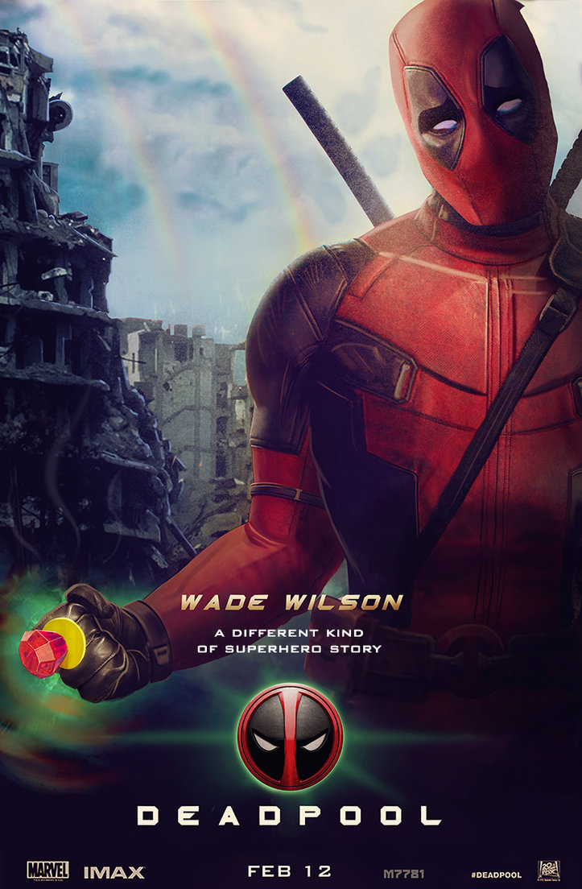
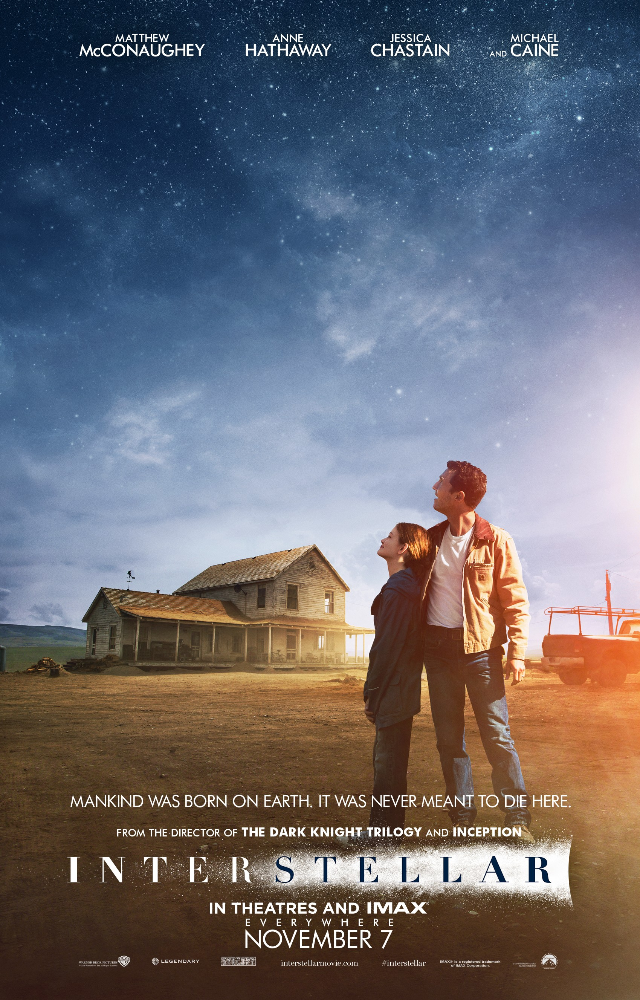
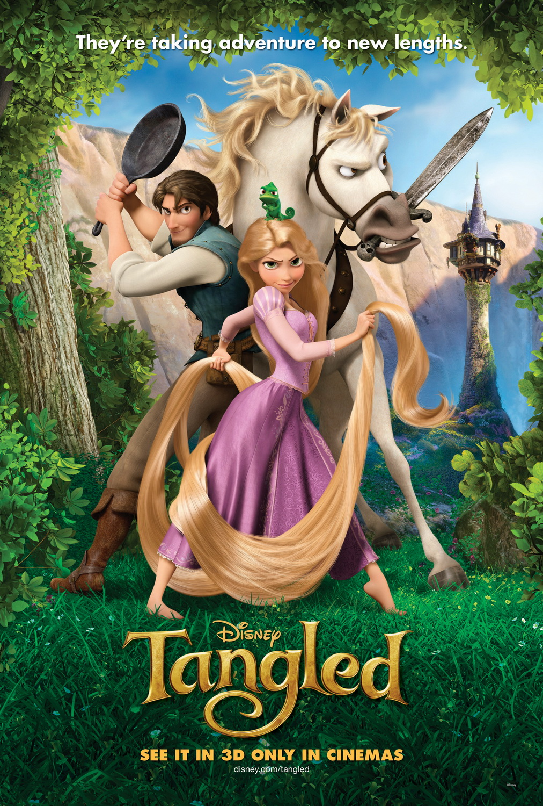

Learning to be a Full-Stack Developer and an Animal Trainer
Check out here|  |
Dead PoolWade Wilson (Ryan Reynolds) is a former Special Forces operative who now works as a mercenary. His world comes crashing down when evil scientist Ajax (Ed Skrein) tortures, disfigures and transforms him into Deadpool. The rogue experiment leaves Deadpool with accelerated healing powers and a twisted … |
|  |
InterstellarIn Earth's future, a global crop blight and second Dust Bowl are slowly rendering the planet uninhabitable. Professor Brand (Michael Caine), a brilliant NASA physicist, is working on plans to save mankind by transporting Earth's population to a new home via a wormhole. But first, Brand must send for… |
|  |
TangledWhen the kingdom's most-wanted bandit, Flynn Rider (Zachary Levi), hides in a convenient tower, he immediately becomes a captive of Rapunzel (Mandy Moore), the spire's longtime resident. Crowned with 70 feet of magical golden hair, she has been locked away for years and desperately wants freedom... |
Born Seoul, Raised Brisbane, Graduated Kobe
This page is just a representation of what a page would look like. It doe not portrait the real version of this author